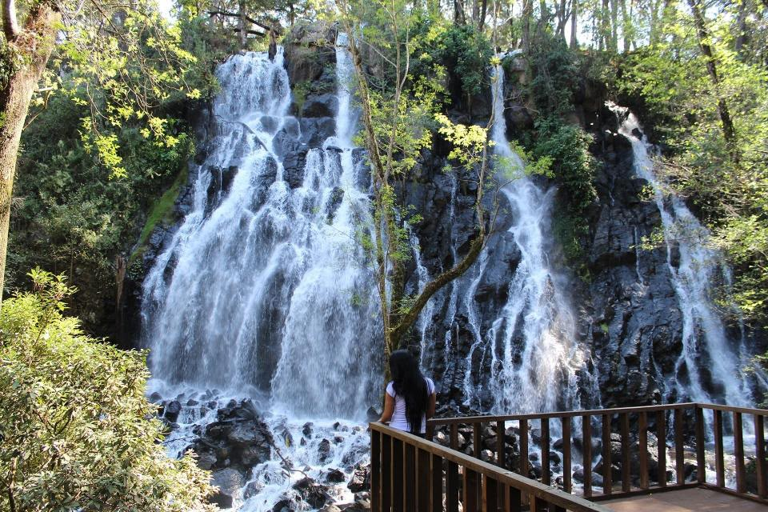
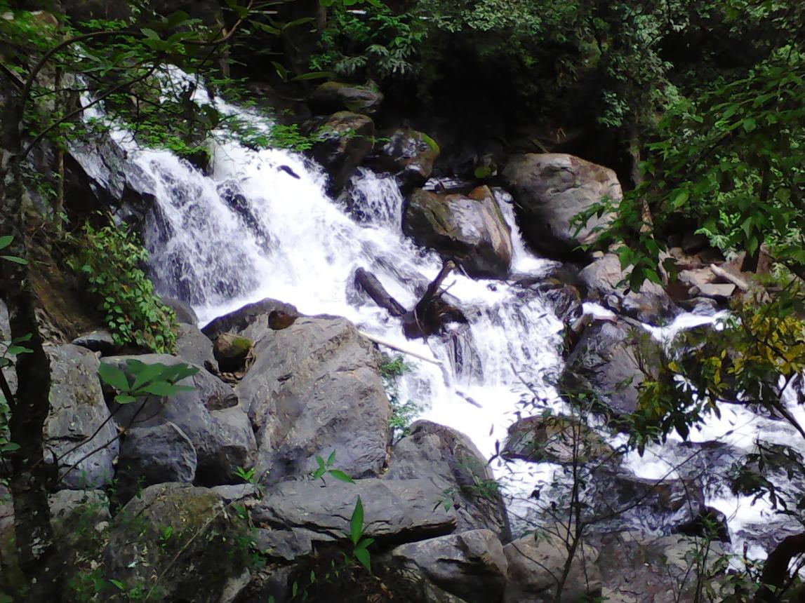

Cascadas

1. Cascada Velo de Novia
La Cascada Velo de Novia es uno de los atractivos naturales más representativos de Valle de Bravo. Cuenta con una caída de agua de aproximadamente 35 metros de altura, cuyo aspecto recuerda al velo de una novia, de ahí proviene su nombre. Se encuentra dentro de un parque natural rodeado de árboles, principalmente pinos y otras especies de vegetación. Cuenta con senderos que permiten a los visitantes caminar por el bosque, contemplar la cascada y disfrutar del paisaje. Es un lugar ideal para apreciar la naturaleza, tomar fotografías y realizar caminatas al aire libre.
Ubicación: Avándaro, Valle de Bravo.

2. Cascada Piedra de Molino
La Cascada Piedra de Molino es un atractivo natural que destaca por sus pequeñas caídas de agua sobre formaciones rocosas. Se encuentra en la zona de Avándaro y forma parte del entorno natural del río El Molino. Este sitio está rodeado de vegetación y árboles que proporcionan un ambiente fresco y tranquilo. El sonido del agua al caer sobre las rocas crea un paisaje natural agradable para quienes desean descansar y disfrutar del entorno. También cuenta con caminos y escalinatas que permiten recorrer diferentes partes del lugar y observar el río desde distintos puntos.
Ubicación: Ruta del Bosque, Avándaro, Valle de Bravo.

3. Cascada Refugio del Salto
La Cascada Refugio del Salto es otro de los atractivos naturales importantes de la región. Tiene una caída de agua de aproximadamente 15 metros de altura y es alimentada por el río El Molino. Para llegar a ella se realiza un recorrido a pie de aproximadamente 20 minutos por senderos que atraviesan el bosque y siguen el cauce del río. Durante el trayecto se pueden apreciar árboles, rocas y vegetación característica de la región. Es un sitio que permite disfrutar de la tranquilidad del bosque y conocer la belleza natural de Valle de Bravo.
Ubicación: Zona de Avándaro, Valle de Bravo.